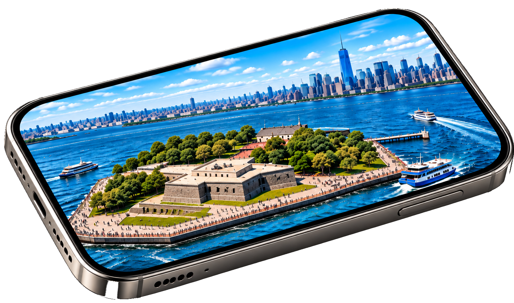
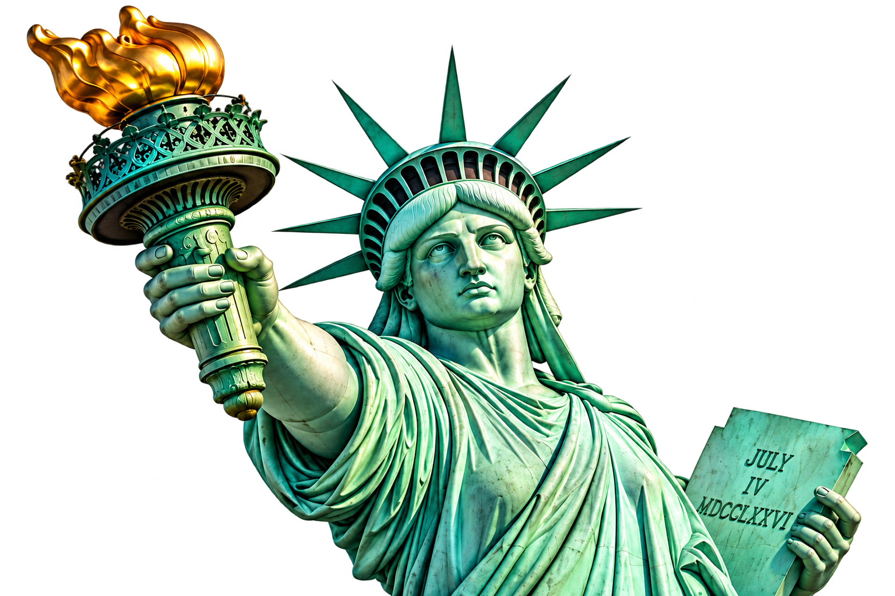

▶ 돌출 애니메이션 시작을 눌러 주세요
한 손가락: 전체 이동 · 두 손가락: 확대/축소 및 회전 · 카메라 실행 후 [위치 배치]를 누르고 화면을 터치하세요.
※ 실제 공간 추적 AR이 아닌 카메라 영상 위 2.5D 이미지 합성 체험입니다.
카메라 합성 · 화면 밖 돌출 애니메이션 · 손가락 이동/회전/확대


한 손가락: 전체 이동 · 두 손가락: 확대/축소 및 회전 · 카메라 실행 후 [위치 배치]를 누르고 화면을 터치하세요.
※ 실제 공간 추적 AR이 아닌 카메라 영상 위 2.5D 이미지 합성 체험입니다.